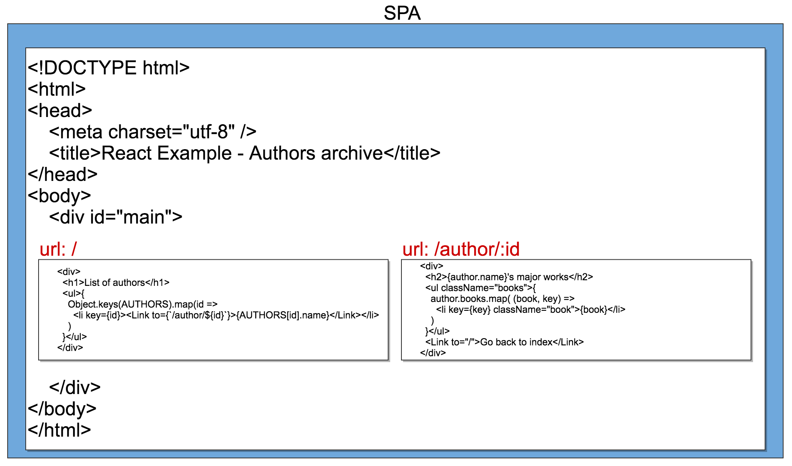
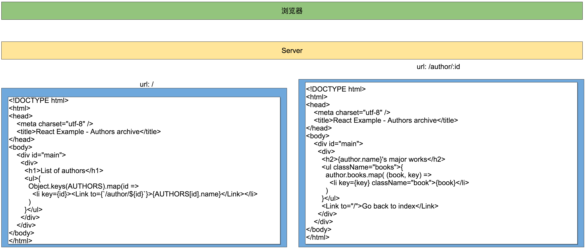
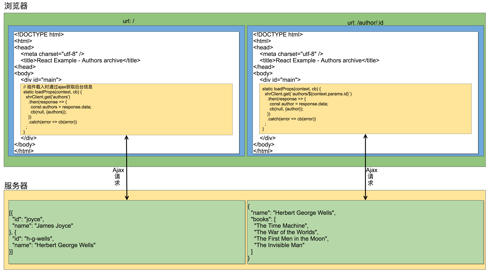

Universal JavaScript for Web Applications
这一章主要讲述了如何在前后端同时使用JavaScript进行编程.
Sharing code with the browser
由于Node.js与Chrome都是利用V8引擎进行JavaScript的代码解析与执行, 由此可以想象或许能在Node.js与浏览器之间共享同一份代码.
然而实际中并不可行, Node.js中在JavaScript的基础上针对服务器开发做了非常多的扩展, 例如require模块系统, HTTP、fs模块等, 而浏览器上也在JavaScript上增加了对DOM、BOM等操作
幸运的是, 越来越多的库同时支持了Node.js环境与浏览器环境.
Sharing modules
首先要解决的是前后端中的模块系统问题, 浏览器环境中没有require()函数与文件系统的操作, 对于在Node.js中开发的代码来说, 首先需要对模块系统进行抽象, 然后才能让其正常运行在浏览器环境中.
Universal Module Definition
对于浏览器环境, 可能会遇到下列情况:
- 完全没有使用模块系统, 意味着只使用
script标签引入, 并且将所有函数都加载在globle环境中. - 使用了某种异步模块定义及加载系统(
Asynchronous Module Definition), 例如RequireJS - 已经有了基于
Commonjs的模块系统(也就是Node.js的模块系统)抽象
由此引出统一模块定义Universal Module Definition (UMD), 使用这种技巧在编写模块时去抽象统一多种状况中的模块系统问题.
Creating an UMD module
UMD模块将会检测当前运行环境, 并选择合适的函数去执行功能.
// umdModule.js
"use strict";
(function (root, factory) {
// 检查环境中是否存在 名为define的函数
// define 函数是 AMD(Asynchronous Module Definition)标准
// 中的API
if (typeof define === 'function' && define.amd) {
// 如果当前环境中使用了 AMD, 则利用define系统网factory函数中注入
// mustache模块
define(['mustache'], factory);
} else if (typeof module === 'object' && // 检测当前环境是否为CommonJS标准
typeof module.exports === 'object') {
// 利用require函数引入 mustache 模块
var mustache = require('mustache');
module.exports = factory(mustache);
} else {
// 以上都不是, 在全局对象中导出模块
root.UmdModule = factory(root.Mustache);
}
}(this, function (mustache) {
var template = '<h1>Hello <i>{{name}}</i></h1>';
mustache.parse(template);
return {
sayHello: function (toWhom) {
return mustache.render(template, {
name: toWhom
});
}
};
}));
在Node.js中的运行umdModule.js
"use strict";
const umdModule = require('./umdModule');
console.log(umdModule.sayHello('Server!'));
运行结果

在浏览器中
<!doctype html>
<html lang="en">
<head>
<meta charset="utf-8">
<script src="node_modules/mustache/mustache.js"></script>
<script src="umdModule.js"></script>
</head>
<body>
<div id="main"></div>
<script>
document.getElementById('main').innerHTML = UmdModule.sayHello('Browser!');
</script>
</body>
</html>
运行结果

在AMD模型中运行
<html>
<head>
<title>Load UMD module from AMD</title>
<script src="node_modules/requirejs/require.js"></script>
<script>
window.addEventListener('load', function () {
requirejs.config({
baseUrl: 'node_modules',
paths: {
// 设置需要用到的库的路径
mustache: './mustache/mustache',
umdModule: '../umdModule'
}
});
// 当`umdModule`加载完毕, 调用function
require(['umdModule'], function (umdModule) {
var hello = umdModule.sayHello('Browser!');
var body = document.getElementsByTagName("body")[0];
body.innerHTML = hello;
});
});
</script>
</head>
<body>
</body>
</html>
运行结果

Considerations on the UMD pattern
利用UMD模式去屏蔽各环境中模块差异非常简单且有效, 但是却造成难以测试, 并且对于各个环境中不同的异常处理也没解决, 而且JavaScript中也不知这三种模块管理系统, 如果需要手动匹配所有有可能出现的模块管理系统是非常麻烦的.
Introducing Webpack
比起在代码中手动编写多种模块加载机制, 更好的方法是保持Node.js代码风格, 并利用第三方工具将代码编译至其他模块系统能识别的代码.
webpack将所有应用需要用到的模块打包成单个JavaScript文件, 这样在浏览器中引用的时候只需将其引入即可.
Exploring the magic of Webpack
Webpack实战
将上一节中的umdModule.js中的UMD模块适配部分去掉, 并将文件改名为sayHello.js
// sayHello.js
"use strict";
let mustache = require('mustache');
let template = '<h1>Hello <i>{{name}}</i></h1>';
mustache.parse(template);
module.exports.sayHello = function(toWhom) {
return mustache.render(template, {name: toWhom});
};
在main.js中使用sayHello模块
"use strict";
window.addEventListener('load', function() {
// 利用`Node.js`的模块机制
var sayHello = require('./sayHello').sayHello;
var hello = sayHello('Browser!');
var body = document.getElementsByTagName("body")[0];
body.innerHTML = hello;
});
然后运行webpsck main.js bundle.js, 将main.js中的代码及依赖生成到bundle.js中, 最后在HTML代码中引入bundle.js即可.
(webpsck 生成的bundle.js将分析所有用到的函数, 并组合到单个文件中, 代码较庞大)
<html>
<head>
<title>Webpack magic</title>
<script src="bundle.js"></script>
</head>
<body>
</body>
</html>
运行结果
The advantages of using Webpack
webpack提供了许多Nodejs中的核心模块(fs、http等)能运行在浏览器中的版本, 可以无所顾虑地使用.- 对于某些无法被转换至浏览器环境中使用的代码,
webpack支持使用其他模块去替换掉. - 可以为不同模块生成不同的
bundle - 可以使用不同的模块加载系统
- 可以通过配置, 处理
JavaScript以外的代码, 例如css, html等 - 除了通过
webpack生成单个文件, 也可以将app生成多个不同的文件.
Fundamentals of cross-platform development
跨平台开发的基本技巧
Runtime code branching
运行时代码分支切换
通过检测特性环境中的特性对象及方法, 例如浏览器中的window与window.document对象.
"use strict";
// 检测当前环境中的 window 对象
// 选择不同的分支
if (typeof window !== "undefined" && window.document) {
console.log('Hey browser!');
} else {
console.log('Hey Node.js!');
}
不难看出这是一种非常简陋的处理方式, 实际中非常不建议这样做.
Build-time code branching
编译时代码分支切换
这一节同样是使用webpack, 但通过配置文件和webpack模块提供的方法, 改变webpack在编译时的行为.
通过配置webpack.config.js进行对webpack编译行为的修改
webpack提供了几个插件用于修改编译行为, 其中
DefinePlugin: 用于定义预编译变量, 也可以修改源文件中的某个值, 与宏定义相似UglifyJsPlugin: 指定如何压缩编译后的源码, 例如移除不可达的代码
// webpack.config.js
"use strict";
const path = require('path');
const webpack = require('webpack');
const definePlugin = new webpack.DefinePlugin({
// 定义预编译变量 __BROWSER__
"__BROWSER__": "true"
});
const uglify = new webpack.optimize.UglifyJsPlugin({
// 设置美化输出
beautify: true,
// 移除不可达代码
dead_code: true
});
module.exports = {
entry: path.join(__dirname, "src", "main.js"),
output: {
path: path.join(__dirname, "dist"),
filename: "bundle.js"
},
plugins: [definePlugin, uglify]
};
main.js
"use strict";
if (typeof __BROWSER__ !== "undefined") {
console.log('Hey browser!');
} else {
console.log('Hey Node.js!');
}
最后生成的代码
!function(r) {
function e(t) {
if (o[t]) return o[t].exports;
var n = o[t] = {
exports: {},
id: t,
loaded: !1
};
return r[t].call(n.exports, n, n.exports, e), n.loaded = !0, n.exports;
}
var o = {};
return e.m = r, e.c = o, e.p = "", e(0);
}([ function(r, e, o) {
"use strict";
console.log("Hey browser!");
} ]);
由于__BROWSER__条件为true, main.js中的if...else语句直接被简化了.
Module swapping
利用webpack实现两种模块替换技术:
- 引用模块时通过变量名而不是
require, 利用DefinePlugin根据不同环境定义该变量的值.
// main.js
"use strict";
// 这段代码无法在使用webpack编译前无法正常运行
const now = __NOW__;
const platform = __PLATFORM__;
const host = __HOST__;
console.log(`Bundle compiled on "${now}" on "${platform}" by "${host}"`);
配置webpack.config.js
"use strict";
const path = require('path');
const webpack = require('webpack');
const os = require('os');
let definePlugin = new webpack.DefinePlugin({
"__NOW__": JSON.stringify((new Date()).toString()),
"__PLATFORM__": JSON.stringify(os.platform()),
"__HOST__": JSON.stringify(os.hostname())
});
module.exports = {
entry: path.join(__dirname, "src", "main.js"),
output: {
path: path.join(__dirname, "dist"),
filename: "bundle.js"
},
plugins: [definePlugin]
};
编译后运行结果:

- 通过搜索替换
require函数中引入的模块名
webpack提供了NormalModuleReplacementPlugin的插件, 用于搜索特定模块名并替换
// alertServer.js
"use strict";
module.exports = console.log;
// alertBrowser.js
"use strict";
module.exports = alert;
// main.js
"use strict";
const alert = require('./alertServer');
alert('Morning comes whether you set the alarm or not!');
通过NormalModuleReplacementPlugin搜索alertServer.js模块名, 并替换为alertBrowser.js
// webpack.config.js
"use strict";
const path = require('path');
const webpack = require('webpack');
let moduleReplacementPlugin =
// 搜索 alertServer.js 替换为 alertBrowser.js
new webpack.NormalModuleReplacementPlugin(/alertServer.js$/, './alertBrowser.js');
module.exports = {
entry: path.join(__dirname, "src", "main.js"),
output: {
path: path.join(__dirname, "dist"),
filename: "bundle.js"
},
// 引入插件
plugins: [moduleReplacementPlugin]
};
编译后文件的主要部分
([
(function (module, exports, __webpack_require__) {
"use strict";
const alert = __webpack_require__(1);
alert('Morning comes whether you set the alarm or not!');
}),
(function (module, exports) {
"use strict";
// 模块已经从 console.log 转换为 alert
module.exports = alert;
})
]);
Design patterns for cross-platform development
利用设计模式进行跨平台开发
- 策略模式: 根据不同的运行环境使用不同的策略, 与根据
window对象选择不同执行代码类似 - 模板模式: 无论是
node.js平台或是浏览器环境, 分别针对两个环境做出不同的实现, 同时对外提供相同的接口. - 适配器模式: 对于浏览器环境不支持的模块, 例如
fs,timer等, 可以利用适配器模式创建新的同名模块并模拟他们的行为 - 代理模式: 对于浏览器不支持的环境, 可以利用
Proxy通过Ajax或websocket与服务器进行通讯, 模拟远程模块的行为. - 观察者模式: 生产者与消费者之间天然是解耦的, 在编写消费者时要注意尽量不适用平台Nodejs特有代码, 而只需在编写生产者时准备两种运行环境的代码即可
- 依赖注入模式: 对于不同运行环境注入不同的模块
Introducing React
React支持使用Node.js风格进行前端开发, 利用模块化, npm进行项目管理和开发
First React component
创建一个用于显示书籍列表的前端页面
// joyceBooks.js
"use strict";
const React = require('react');
const books = [
'Dubliners',
'A Portrait of the Artist as a Young Man',
'Exiles and poetry',
'Ulysses',
'Finnegans Wake'
];
class JoyceBooks extends React.Component {
render() {
return (
// JSX 代码, 在HTML中嵌入JS-like代码
<div>
<h2>James Joyce's major works</h2>
<ul className="books">{
books.map( (book, key) =>
<li key={key} className="book">{book}</li>
)
}</ul>
</div>
);
}
}
module.exports = JoyceBooks;
JSX代码并不能在浏览器或Nodejs平台中正常解析, 同样需要通过webpack进行编译
编译后的代码类似于
return React.createElement(
'div',
null,
React.createElement('h2', null, 'James Joyce\'s major works'),
React.createElement('ul', {
className: 'books'
}, books.map(function (book) {
return React.createElement('li', {
className: 'book'
}, book);
})));
}
上面的代码创建了一个用于显示JoyceBooks的组件, 但还未创建将它显示在浏览器中的代码
// main.js
"use strict";
const React = require('react');
const ReactDOM = require('react-dom');
const JoyceBooks = require('./joyceBooks');
window.onload = () => {
// 当前页面加载完成时, 将 JoyceBooks DOM显示值id为 main 的元素中
ReactDOM.render(<JoyceBooks/>, document.getElementById('main'))
};
使用webpack进行编译, 最后在浏览器输出的结果

<ul class="books">
<li class="book">Dubliners</li>
<li class="book">A Portrait of the Artist as a Young Man</li>
<li class="book">Exiles and poetry</li>
<li class="book">Ulysses</li>
<li class="book">Finnegans Wake</li>
</ul>
Creating a Universal JavaScript app
编写一个前后端都为JS栈的app
编写一个前端显示书本列表并从后台拉取数据的Js应用
Creating reusable components
首先利用虚拟数据模拟后端返回的数据
// authors.js
"use strict";
module.exports = {
'joyce': {
'name': 'James Joyce',
'books': [
'Dubliners',
'A Portrait of the Artist as a Young Man',
'Exiles and poetry',
'Ulysses',
'Finnegans Wake'
]
},
'h-g-wells': {
'name': 'Herbert George Wells',
'books': [
'The Time Machine',
'The War of the Worlds',
'The First Men in the Moon',
'The Invisible Man'
]
}
};
- 编写用于显示书本列表的
React组件
"use strict";
const React = require('react');
const Link = require('react-router').Link;
// 从 authors 模块获取所有作者及其著作信息
const AUTHORS = require('../authors');
class AuthorPage extends React.Component {
render() {
// 根据id获取
const author = AUTHORS[this.props.params.id];
return (
<div>
// 显示作者名称
<h2>{author.name}'s major works</h2>
<ul className="books">{
// 遍历生成著作列表
author.books.map( (book, key) =>
<li key={key} className="book">{book}</li>
)
}</ul>
// 提供跳转回index的链接
<Link to="/">Go back to index</Link>
</div>
);
}
}
module.exports = AuthorPage;
- 作者列表组件
// authorsIndex.js
"use strict";
const React = require('react');
const Link = require('react-router').Link;
const AUTHORS = require('../authors');
class AuthorsIndex extends React.Component {
render() {
return (
<div>
<h1>List of authors</h1>
<ul>{
// 遍历作者名称, 生成列表
Object.keys(AUTHORS).map(id =>
<li key={id}><Link to={`/author/${id}`}>{AUTHORS[id].name}</Link></li>
)
}</ul>
</div>
)
}
}
module.exports = AuthorsIndex;
由于这是一个SPA, 还需要模拟路由的组件
"use strict";
const React = require('react');
const ReactRouter = require('react-router');
const Router = ReactRouter.Router;
const hashHistory = ReactRouter.hashHistory;
const AuthorsIndex = require('./components/authorsIndex');
const AuthorPage = require('./components/authorPage');
const NotFound = require('./components/notFound');
const routesConfig = [
// '/' 根目录重定向为 AuthorsIndex
{path: '/', component: AuthorsIndex},
// '/author/:id' 路径重定向为 AuthorsIndex
{path: '/author/:id', component: AuthorPage},
// '*' 其他路径重定向到NotFound
{path: '*', component: NotFound}
];
class Routes extends React.Component {
render() {
return <Router history={hashHistory} routes={routesConfig}/>;
}
}
module.exports = Routes;
利用webpack编译后的运行结果


Server-side rendering
这一节使用的是采用MVC模式, 从后台利用Express与ejs模板引擎发送HTML代码.
view/index.ejs
<!DOCTYPE html>
<html>
<head>
<meta charset="utf-8" />
<title>React Example - Authors archive</title>
</head>
<body>
<div id="main">
// markup 标记
// 利用ejs进行替换
<%- markup -%>
</div>
</body>
</html>
server.js
"use strict";
const http = require('http');
const Express = require('express');
const React = require('react');
const ReactDom = require('react-dom/server');
const Router = require('react-router');
const routesConfig = require('./src/routesConfig');
const app = new Express();
const server = new http.Server(app);
app.set('view engine', 'ejs');
app.get('*', (req, res) => {
Router.match(
// 传入 路由设置 与 请求url
{routes: routesConfig, location: req.url},
(error, redirectLocation, renderProps) => {
if (error) {
res.status(500).send(error.message)
} else if (redirectLocation) {
// 检测是否需要重定向
res.redirect(302, redirectLocation.pathname + redirectLocation.search)
} else if (renderProps) {
// 根据路径生成对应HTML文本
let markup = ReactDom.renderToString(<Router.RouterContext {...renderProps} />);
// 将文本发送至浏览器
res.render('index', {markup});
} else {
res.status(404).send('Not found')
}
});
});
server.listen(3000, (err) => {
if (err) {
return console.error(err);
}
console.info('Server running on http://localhost:3000');
});"use strict";
const http = require('http');
const Express = require('express');
const React = require('react');
const ReactDom = require('react-dom/server');
const Router = require('react-router');
const routesConfig = require('./src/routesConfig');
const app = new Express();
const server = new http.Server(app);
app.set('view engine', 'ejs');
// 将所有GET请求路由到该函数
app.get('*', (req, res) => {
Router.match(
// 传入 路由设置 与 请求url
{routes: routesConfig, location: req.url},
(error, redirectLocation, renderProps) => {
if (error) {
res.status(500).send(error.message)
} else if (redirectLocation) {
// 检测是否需要重定向
res.redirect(302, redirectLocation.pathname + redirectLocation.search)
} else if (renderProps) {
// 根据路径生成对应HTML文本
let markup = ReactDom.renderToString(<Router.RouterContext {...renderProps} />);
// 将文本发送至浏览器
res.render('index', {markup});
} else {
res.status(404).send('Not found')
}
});
});
server.listen(3000, (err) => {
if (err) {
return console.error(err);
}
console.info('Server running on http://localhost:3000');
});
由此一来, 这个APP从 SPA 转换成了普通的 Server-Base APP

转变为

Universal data retrieval
根据SPA风格的APP可以看出, 前端需要的只是作者及其著作的数据
因此完全可以转换为 前端通过AJAX获取数据并改变DOM, 后端通过API接口返回数据即可
The API server
后台通过提供HTTP API的形式返回作者数据.
"use strict";
const http = require('http');
const Express = require('express');
const app = new Express();
const server = new http.Server(app);
// authors数据源
const AUTHORS = require('./src/authors');
// logger组件
app.use((req, res, next) => {
console.log(`Received request: ${req.method} ${req.url} from ${req.headers['user-agent']}`);
next();
});
//
app.get('/authors', (req, res, next) => {
const data = Object.keys(AUTHORS).map(id => {
// 以JSON的形式返回id与作者名称
return {
'id': id,
'name': AUTHORS[id].name
};
});
res.json(data);
});
app.get('/authors/:id', (req, res, next) => {
if (!AUTHORS.hasOwnProperty(req.params.id)) {
// id不存在即返回
return next();
}
// 根据id获取作者详细
const data = AUTHORS[req.params.id];
res.json(data);
});
server.listen(3001, (err) => {
if (err) {
return console.error(err);
}
console.info('API Server running on http://localhost:3001');
});
Asynchronous React components
前端改为异步从后台拉取数据, 并将数据渲染至HTML中
这里用到了axios的库, axios用于对Ajax进行抽象并返回一个promise
- 作者信息索引
authorIndex.js
// authorIndex.js
const Axios = require('axios');
const React = require('react');
const Link = require('react-router').Link;
const xhrClient = Axios.create({ 'http://localhost:3001' });
class AuthorsIndex extends React.Component {
// 组件载入时通过ajax获取后台信息
static loadProps(context, cb) {
xhrClient.get('authors')
.then(response => {
const authors = response.data;
cb(null, {authors});
})
.catch(error => cb(error))
;
}
render() {
return (
<div>
<h1>List of authors</h1>
<ul>{
// this.props.authors在页面加载前就已经通过 loadProps 从服务器获取了
this.props.authors.map(author =>
<li key={author.id}>
<Link to={`/author/${author.id}`}>{author.name}</Link>
</li>
)
}</ul>
</div>
)
}
}
module.exports = AuthorsIndex;
- 作者详细著作信息
authorPage.js
"use strict";
const Axios = require('axios');
const React = require('react');
const Link = require('react-router').Link;
const xhrClient = Axios.create({ 'http://localhost:3001' });
class AuthorPage extends React.Component {
static loadProps(context, cb) {
xhrClient.get(`authors/${context.params.id}`)
.then(response => {
const author = response.data;
cb(null, {author});
})
.catch(error => cb(error))
;
}
render() {
return (
<div>
<h2>{this.props.author.name}'s major works</h2>
<ul className="books">{
this.props.author.books.map( (book, key) =>
<li key={key} className="book">{book}</li>
)
}</ul>
<Link to="/">Go back to index</Link>
</div>
);
}
}
module.exports = AuthorPage;
- 最后是前端路由
route.js, 已完成SPA特性
"use strict";
const React = require('react');
const AsyncProps = require('async-props').default;
const ReactRouter = require('react-router');
const Router = ReactRouter.Router;
const browserHistory = ReactRouter.browserHistory;
const routesConfig = require('./routesConfig');
class Routes extends React.Component {
render() {
return <Router
history={browserHistory}
routes={routesConfig}
render={(props) => <AsyncProps {...props}/>}
/>;
}
}
module.exports = Routes;
最后模型转变为

总结
浏览器和Node.js的JavaScript运行环境在标准库, 编写风格和函数行为上的表现都大不相同.即使如此, 利用Node.js的模块管理与npm包管理系统编写前端代码, 然后利用webpack之类的编译工具编译到符合浏览器标准的代码, 构成了完整的JavaScript生态, 前后端web开发减少了思维切换的难度, 非常不错.